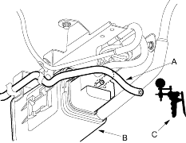
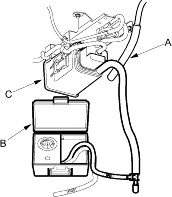

- Disconnect the vacuum hose (A) from the EVAP canister (B) and connect a vacuum gauge (C) to the hose.

- Start the engine and let it idle.
NOTE: Engine coolant temperature must be below 70°C (158°F).
Is there vacuum?
YES |
- Inspect vacuum hose routing. If OK, replace the EVAP canister purge valve. |
NO |
- Go to step 3. |

- Hold the engine at 3,000 rpm (min-1) with no load (in Park or neutral) until the radiator fan comes on, then raise the engine speed to 3,000 rpm (min-1).
Is there vacuum?
YES |
- Go to step 4. |
NO |
- Inspect vacuum hose routing. If OK, replace the EVAP canister purge valve. |
- Turn the ignition switch OFF.
- Reconnect the vacuum hose to the EVAP canister.
- Remove the fuel fill cap.
- Disconnect the purge air hose (A) from the EVAP canister and connect a vacuum pressure gauge 0-100 mmHg (0-4 in.Hg) (B) to EVAP canister (C).

- Start the engine and raise speed to 3,000 rpm (min-1).
Does vacuum appear on gauge within 1 minute?
YES |
- See EVAP two way valve test to complete. Evaporative emission controls are OK. |
NO |
- Replace the EVAP canister. |